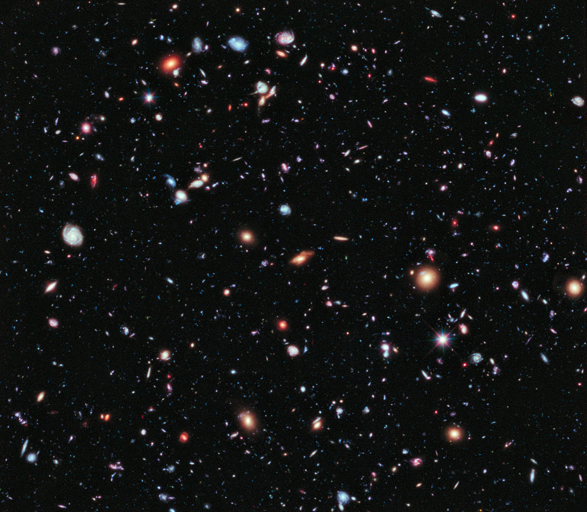
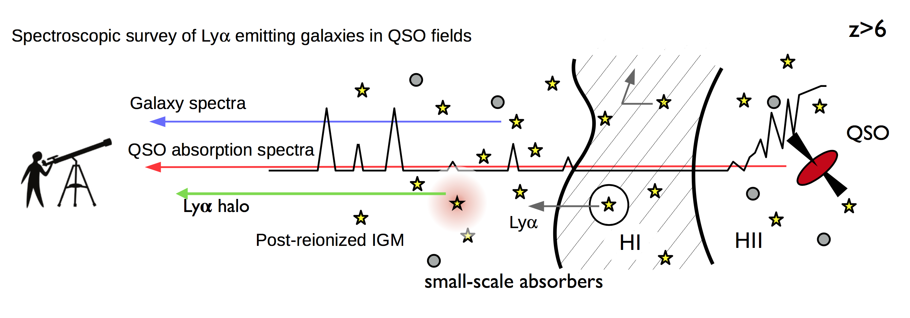
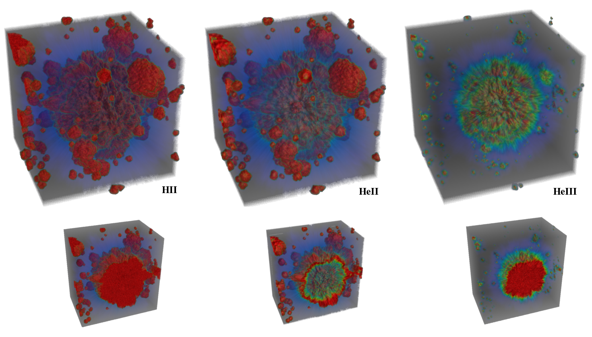
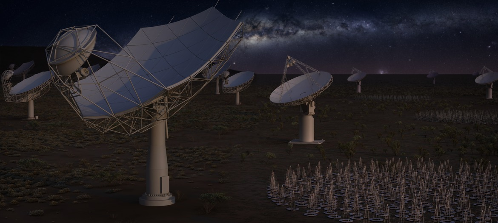

Research
The nature of Epoch of Reionization and Cosmic Dawn,
the first billion years in the universe.
My research is centred on trying to understand the nature of the Epoch of Reionization and Cosmic Dawn, which is thought to happen during the first billon years in the cosmic history. During this era, the very first stars and galaxies are born, marking the end of the Dark Ages when the universe had no luminous object before. These sources or their descendants (we don't know yet!) drove the cosmic phase transition, the process called 'Reionization', as the intergalactic medium has transformed from neutral to ionized gas. This drastic event transformed the infant universe, adding colours in our world picture with galaxies and black holes, which then changed their environments to the present-day state of the universe around us.
I think the essence of this exciting field of the ultra-deep universe exploration is captured by this single image -- Hubble eXtreme Deep Field -- taken by the Hubble Space Telescope. This image contains thousands of galaxies ranging from high-redshift (z>6, presumably in the heart of reionization era) to low-redshift (present-day) objects. Our aim is to construct a complete story of cosmic history from these kind of deep imaging and spesctroscopic observations, with aid of supercomputer simulations based on the physical principles. Along this line, my research is broadly divided into three catelogries: Lyman alpha emitting galaxies, intergalactic medium, 21 cm cosmology.
Lyman alpha emitting galaxies & QSO absorption spectroscopy
Lyman alpha line (the 2P → 1S transition in atomic hydrogen)
I am very enthusiastic about understanding and using Lyman-alpha emitting galaxies that play important roles in constraining the nature of reionization, galaxy formation, and cosmology. Together with QSO absorption spectroscopy, surveys of Lyman-alpha emitting galaxies offer a magnificent observational window to unlock the interplay between galaxies and the intergalactic medium throughout cosmic history.
Lyman alpha line is my primary tool to understand the states of high-redshift galaxies and the intergalactic medium during the Epoch of Reionization.
intergalactic medium
Lyman alpha line (the 2P → 1S transition in atomic hydrogen)
21 cm Cosmology
Lyman alpha line (the 2P to 1S transition in atomic hydrogen)

Mollis adipiscing nisl
Eget mi ac magna cep lobortis faucibus accumsan enim lacinia adipiscing metus urna adipiscing cep commodo id. Ac quis arcu amet. Arcu nascetur lorem adipiscing non faucibus odio nullam arcu lobortis. Aliquet ante feugiat. Turpis aliquet ac posuere volutpat lorem arcu aliquam lorem.

Neque ornare adipiscing
Eget mi ac magna cep lobortis faucibus accumsan enim lacinia adipiscing metus urna adipiscing cep commodo id. Ac quis arcu amet. Arcu nascetur lorem adipiscing non faucibus odio nullam arcu lobortis. Aliquet ante feugiat. Turpis aliquet ac posuere volutpat lorem arcu aliquam lorem.